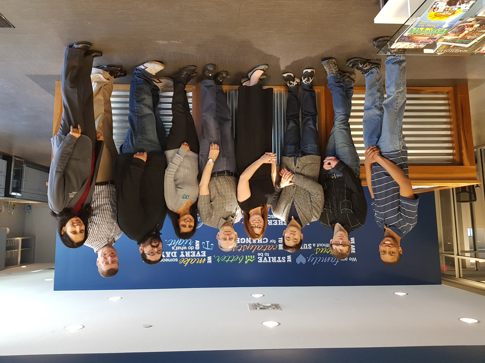
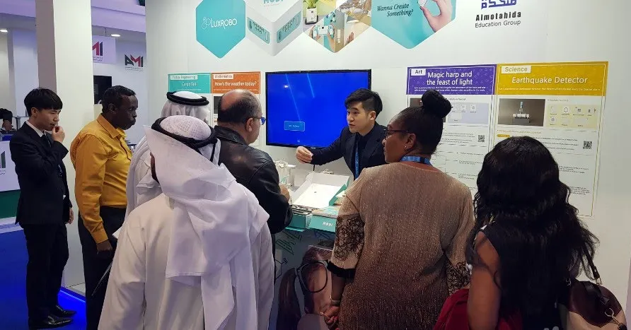

AI & IT Consultant
박병준Park Byungjun
AI · 빅데이터 · 클라우드 생태계를 뉴스 속도로 교육과 엔지니어링에 적용합니다. KDT 장기과정 2기수 연속 100% 수료, 만족도 100% 추천
AI · 빅데이터 · 클라우드 생태계를 뉴스 속도로 교육과 엔지니어링에 적용합니다. KDT 장기과정 2기수 연속 100% 수료, 만족도 100% 추천
학문적 배경과 클라우드 · 데이터 분야 공인 자격으로 다져진 기술 인프라.
뉴스 속도의 최신 교육, 100% 수료의 학습자 맞춤 교육, 장애율 0%의 엔지니어링.
하나금융그룹 · KT · LG헬로비전 · KOICA · 모두의연구소 — 기업 실무자 대상 강의에서 최고 수준의 만족도를 달성합니다.
“그가 감독하는 동안 발생한 서비스 장애는 0건이었습니다.”
— 카카오 키즈노트 팀
풀스택 엔지니어 양성 1,000시간 장기과정, 2년간 총 48명
— 두 기수 모두 100% 수료, 만족도 제출 인원 전원 추천.
2018년부터 누적된 강의 트랙 — 대기업 재직자 교육부터 KDT 장기과정, 국제기구 협력교육까지.
| 강의 및 교육 활동 | 기간 | 운영기관 |
|---|---|---|
| 모두의연구소 AI 활용 서비스 기획/개발 전문가 과정 (직장인 바이브코딩 실전 프로젝트 과정) — 5기 | 2026.03 ~ 2026.06 | 모두의연구소 |
| 모두의연구소 AI 활용 서비스 기획/개발 전문가 과정 (직장인 바이브코딩 실전 프로젝트 과정) — 2기 | 2025.10 ~ 2026.01 | 모두의연구소 |
| 삼육대학교 KDT 산학협력 학점 연계과정 (AI 활용 클라우드 네이티브 풀스택 엔지니어 양성과정) | 2025.01 ~ 2025.09 | 한국정보교육원 |
| 구름 프로펙트 클라우드과정 특강 (체계적 프로젝트 문서화 & Kafka 핵심 개념 실무 적용) | 2025.06 | 구름EDU |
| 스리랑카 커리어 플랫폼 IT 운영자 국내 초청교육 (웹 개발 최신 트렌드 & 생성형 AI 특강) | 2025.06 | KOICA |
| 하나금융그룹 현직자 교육 (리눅스 중급 심화 및 MSA 웹 서버 구축 및 운영 실무 특강) | 2025.05 | 하나금융그룹 |
| 하나금융그룹 현직자 교육 (클라우드 기반 MSA 서비스 설계 & Kubernetes (EKS) 활용 운영 자동화) | 2024.12 | 하나금융그룹 |
| 삼육대학교 KDT (클라우드 기반 풀스택 Java Spring Boot & React Web 엔지니어 양성과정) | 2024.01 ~ 2024.09 | 한국정보교육원 |
| LG헬로비전 DX DATA SCHOOL 엔지니어 양성과정 프로젝트 멘토링 | 2024.05 ~ 2024.06 | 한국전파진흥협회 |
| KT 재직자 교육 (AWS 기반 Kafka 데이터 스트리밍 & Redis Cache 클러스터 구축 연동 과정) | 2024.05 | 삼성 멀티캠퍼스 |
| 메이커교육 분야 글로벌 서비스 기획 및 해외 진출기업 컨설팅 | 2022.11 ~ 2023.12 | 메이커스월드 |
| 동국대, 건국대, 대학연합 백엔드 개발자 진로 특강 | 2022.08 ~ 2022.11 | 엘리트코리아 |
| 내일배움캠프 클라우드 웹 개발자 양성과정 프로젝트 및 진로 멘토링 | 2021.12 ~ 2022.03 | 스파르타 코딩 |
| 기아자동차 노사공동교육 (4차산업혁명 트렌드와 SW/HW 융합기술 특강) | 2020.06 ~ 2021.12 | 기아자동차 |
| 모듈형 로봇프로그래밍 교육 (미국, 중동) | 2018.09 ~ 2019.12 | 럭스로보 |
| 임베디드SW 엔지니어 양성과정 (아두이노) | 2018.07 ~ 2018.09 | 광운대학교 |
| 파이썬 웹 프로그래밍 과정 (Django) | 2018.04 ~ 2018.05 | KG IT뱅크 |
국책기관 · 글로벌 사업개발 · 백엔드 엔지니어링 · 기술교육 — 다각도의 IT 산업 이력.
| 회사명 | 기간 | 직위 / 직책 | 직무 |
|---|---|---|---|
| 한국정보교육원 | 2024.01 ~ 현재 | 기술 교육 컨설턴트 및 강사 | 교육과정 설계 컨설팅 및 기술교육 |
| 데이터스토리 허브 | 2024.02 ~ 2025.12 | (사외) 기술 컨설턴트 및 강사 | 기업 IT 컨설팅 및 기술교육 |
| 키즈노트 | 2021.09 ~ 2024.01 | 연구원 | 광고 시스템 백엔드 엔지니어 |
| 엑시아소프트 | 2021.03 ~ 2021.09 | 연구원 | 코인 거래소 백엔드 엔지니어 |
| 메이커스월드 | 2020.09 ~ 2021.03 | 컨설턴트 및 강사 | 메이커교육 해외시장개척 지원 |
| 한국생산성본부 | 2020.02 ~ 2020.09 | 연구원 | SW기업 해외시장개척 지원 |
| 럭스로보 | 2018.06 ~ 2019.12 | 팀장 | 모듈형 로봇 글로벌 사업 개발 |
| 한국소프트웨어산업협회 | 2016.11 ~ 2018.06 | 선임연구원 | SW 전문가 자격평가시험 개발 |
기업 · 국제기구 · 연구기관과의 협업 — 콘텐츠 설계부터 엔지니어링 솔루션 출시까지.
스리랑카 방문단 국내 연수 AI Workshop — 머신러닝에서 LLM까지 시각적 · 심층적 이해부터 본격 Application 개발 워크샵까지 완주.
| Day | Topic |
|---|---|
| Day 1 | IT 플랫폼 기술 트렌드 (MSA, 컨테이너 가상화, 클라우드 네이티브) |
| Day 2 | AWS 클라우드 서비스 실습 |
| Day 3 — 5 | AI 산업 및 기술 트렌드 / 생성형 AI 활용 워크샵 |
| Day 6 | ITSQF 소개 및 IT 역량 기반 교육 플랫폼 설계 |
| Day 7 — 8 | 플랫폼 운영을 위한 인프라 관리 자동화 (AWS - EKS) |
하나금융그룹 재직자 대상 클라우드 네이티브 DevOps + 리눅스 심화 특강 — EKS 인프라부터 Rocky 리눅스 기반 보안·웹 서비스 배포까지.
클라우드 네이티브 MSA 광고 서비스 책임 개발 — 광고집행 백엔드 서버 리뉴얼 런칭, 광고 매출 증대를 위한 ML 적용 송출 로직 고도화 개발.
Kidsnote · 광고매출 추이
월별 매출 (단위 · 백만원) · 재직 기간(21.09 ~ 23.07) 표시
↔ 마우스 휠을 굴리면 그래프가 좌우로 스크롤됩니다 ↕ 페이지를 내리면 그래프가 좌우로 펼쳐집니다
AWS 기반 초고속 유저 알림 서비스 개발 & 백오피스 대시보드 · 대용량 데이터 추출 — 암호화폐 거래소 "코인빗" 초고속 거래 체결 서버 유지관리.
중국 AI 교육 고도화 사례 벤치마킹 연구.
국내 SW 고성장 기업 글로벌 시장 개척 컨설팅 — Purdue 대학교 · Plug&Play 협력 지원 등.

산학협력단 SW & HW 융합 메이커 교육 방법론 연구.
미국 · 중동 · 중국 시장 진출 및 파트너십 · 기술교류 수행.





기업 IT 실무자 교육, 장기과정 강의, 클라우드 아키텍처 설계 컨설팅까지 — 현장의 변화 속도에 맞춰 함께 일합니다.